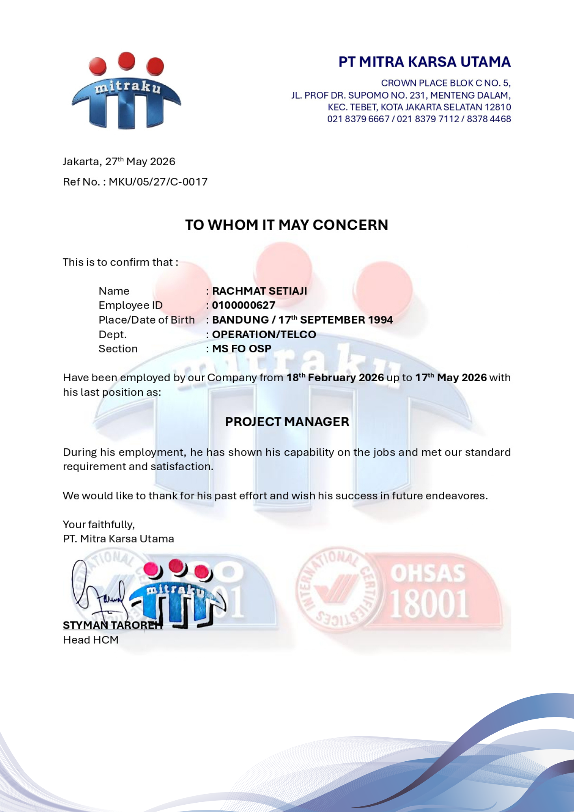
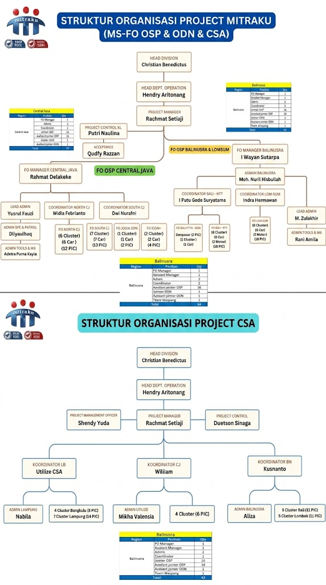
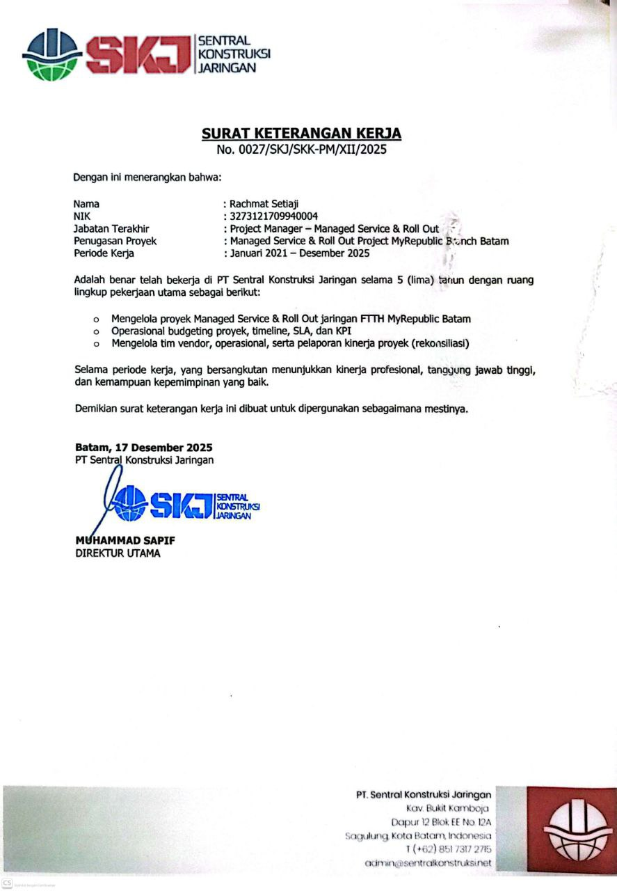
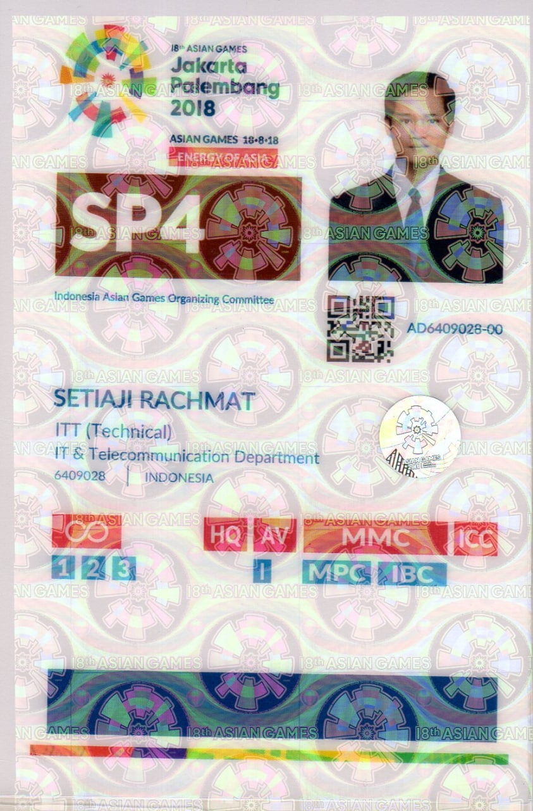
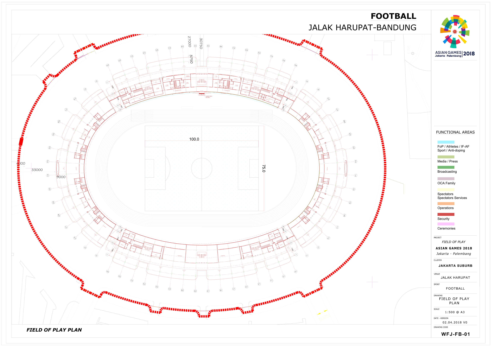

Rachmat Setiaji
Project Manager | IT/ICT Telco & Network Manager | 5+ Years Experience
Professional Summary
Project Manager di bidang IT, OSP, & FTTx dengan pengalaman lebih dari 5 tahun dalam mengelola managed services dan koordinasi proyek telekomunikasi/jaringan. Pernah berkontribusi di Project INASGOC Asian Games 2018 sebagai ICT Telco & Network Coordinator, dengan rekam jejak dalam memimpin tim lapangan, melakukan analisis gangguan teknis, mengelola stakeholder, serta memastikan implementasi proyek berjalan tepat waktu sesuai SOP. Memiliki kemampuan komunikasi yang kuat serta berorientasi pada pencapaian hasil dan kualitas layanan.
Portofolio & Sertifikat
Klik gambar untuk memperbesar (Pop-up)




Core Skills & Competencies
Managing teams to build and maintain network infrastructure.
Team Leadership & Cross-Functional Coordination.
Vendor & Client Communication & collaboration.
Root Cause Analysis & technical problem resolution.
SLA Management & Progress Monitoring reporting.
FTTx, OSP, MSFO, IKR, & Network Device O&M (OLT, BNG, Cisco, Huawei, ZTE).
Work Experiences
Project Manager FO
2026PT. Mitra Karsa Utama (MSFO Project XLS, FMI & CSA - Head Office)
- Memimpin perencanaan hingga eksekusi proyek MSFO secara end-to-end sesuai SLA dan standar teknis.
- Mengelola perizinan eksternal untuk kelancaran civil works dan penarikan kabel.
- Pengendalian Anggaran (OPEX): Mengelola anggaran proyek dan mengoptimalkan penggunaan alker & sarker.
- Closing Proyek: Mengawal proses commissioning test, serah terima, hingga penerbitan invoice.
Project Manager
2021 – 2025PT. Sentral Konstruksi Jaringan (MS & Roll Out Project FTTx - MyRepublic Branch Batam)
- Memimpin dan mengkoordinasikan proyek Telco mulai dari perencanaan, eksekusi, hingga serah terima.
- Mengelola tim teknis dan memastikan seluruh aktivitas berjalan sesuai timeline dan standar operasional.
- Melakukan monitoring progres harian, menyusun laporan proyek, serta mengidentifikasi risiko sejak dini.
- Berkolaborasi dengan vendor, mitra, dan client untuk memastikan kebutuhan dan ekspektasi terpenuhi.
- Mengoptimalkan proses kerja sehingga meningkatkan efisiensi penyelesaian proyek hingga 90%.
- Menangani eskalasi teknis secara cepat dan menjaga kualitas layanan selama masa implementasi.
- Melakukan business trip sesuai kebutuhan proyek dan koordinasi lapangan.
O&M Switching (TDM Engineer)
2015 – 2018PT. Telkom Akses Indonesia, Tbk. (Telkom Bukit Dangas Batam)
- Operate and maintain TDM switching systems (AT&T/5ESS/EWSD, Radio/DWDM).
- Support network engineering and service delivery for enterprise clients.
Education
Certificates & Info
Languages: Indonesian (Native), English (Working Proficiency)
- • Experienced in working at state-owned & private telecommunications companies.
- • Previously served as ICT Telco & Network Coordinator [Asian Games 2018] - INASGOC.
- • TP-LINK - Omada Certified Network Administrator (OCNA_Routing & Switching).
- • TP-LINK - Omada Certified Network Administrator (OCNA_Wireless).